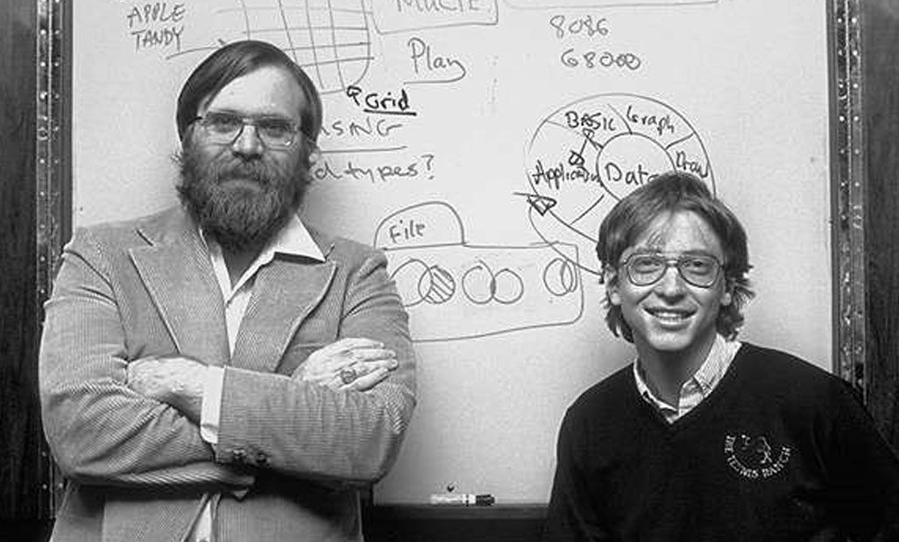
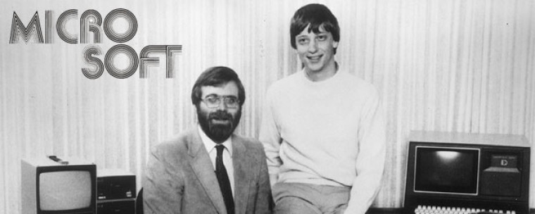

Infância e juventude
Gates nasceu em uma família de classe média de Seattle. Seu pai, William H. Gates, era advogado de grandes empresas, e sua mãe, Mary Maxwell Gates, foi professora da Universidade de Washington e diretora de bancos. Bill Gates e as suas duas irmãs, Kristanne e Libby, frequentaram as melhores escolas particulares de sua cidade natal, e Bill também participou do Movimento Escoteiro ainda quando jovem. Bill Gates,[10] foi admitido na prestigiosa Universidade Harvard, (conseguindo 1590 SATs dos 1600 possíveis[11]) mas abandonou os cursos de Matemática e Direito no terceiro ano,[12] para dedicar-se à Microsoft.
Ascensão
Enquanto estudavam em Harvard, os jovens desenvolveram um interpretador da linguagem BASIC para um dos primeiros computadores pessoais a serem lançado nos Estados Unidos - o Altair 8800. Após um modesto sucesso na comercialização deste produto, Gates e Allen fundaram a Microsoft, uma das primeiras empresas no mundo focadas exclusivamente no mercado de programas para computadores pessoais ou PCs.
Timeline
- 1967 vai para a escola Lakeside.
- 1973 Matricula-se na Universidade de Harvard.
- 1975 Abandona a escola
- 1980 Microsoft assina acordo importante com a IBM.
- 1988 Paul Allen deixa a Microsoft.
- 1994 Bill casa-se com Melinda French, funcionária da Microsoft, na ilha do Havaí.
- 2000 Bill cria a Fundação Bill e Melinda Gates.
striking photos

- 
- 